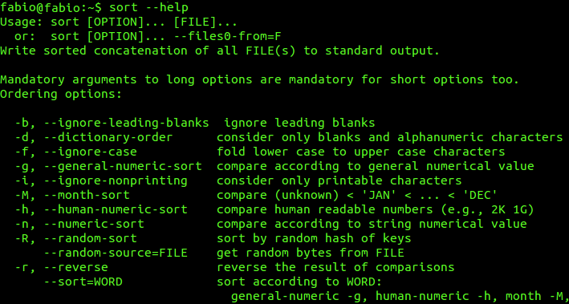
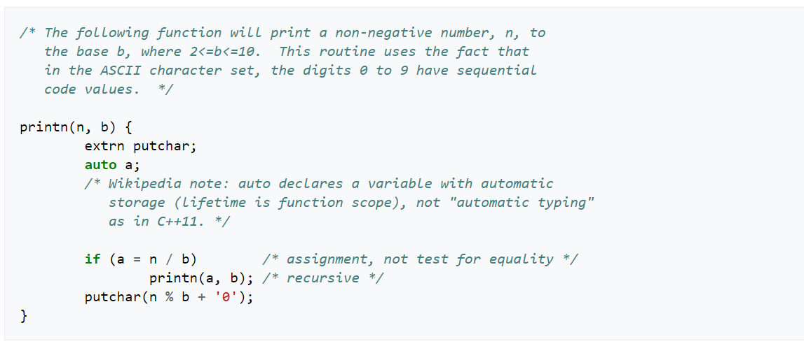
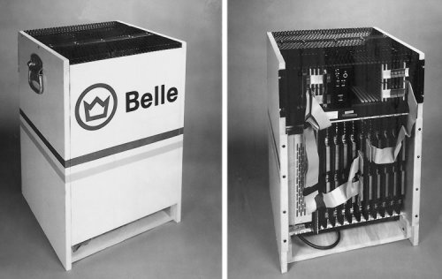
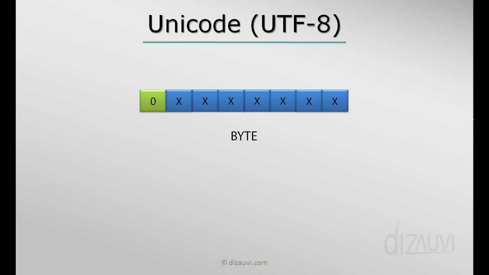

Unix is a type of computer operating system. Multitasking and multi-user features are supported. Unix is the most extensively used for operating system on all types of computers, including desktops, laptops, and servers. Unix has a graphical user interface (GUI) that is comparable to Windows and allows for easy navigation and support of the environment.
B is a programming language that was created in 1969 at Bell Labs. Ken Thompson and Dennis Ritchie came up with the idea. B is a short form of BCPL, and its name might be a contraction of BCPL. Dennis Ritchie, Thompson's coworker, thought that the term was derived from Bon, an earlier but unrelated programming language that Thompson created for use on Multics.
Joe Condon and Ken Thompson of Bell Labs created Belle, a chess computer. With a USCF rating of 2250, it was the first machine to attain professional play in 1983. It won the 1980 World Computer Chess Championship and the ACM North American Computer Chess Championship five times.
UTF-8 is a character encoding with variable widths that is used in electronic communication. The term is taken from Unicode Transformation Format – 8-bit, as defined by the Unicode Standard. With one to four one-byte code units, UTF-8 can encode all 1,112,064 valid Unicode character code points.
